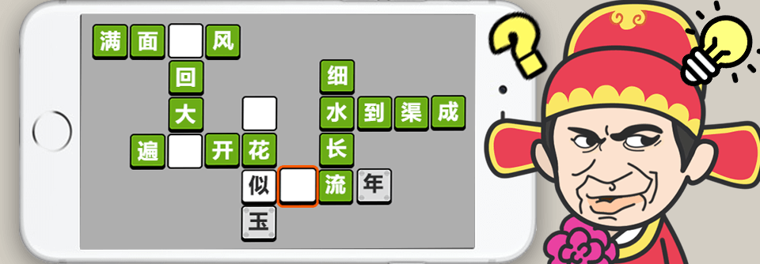
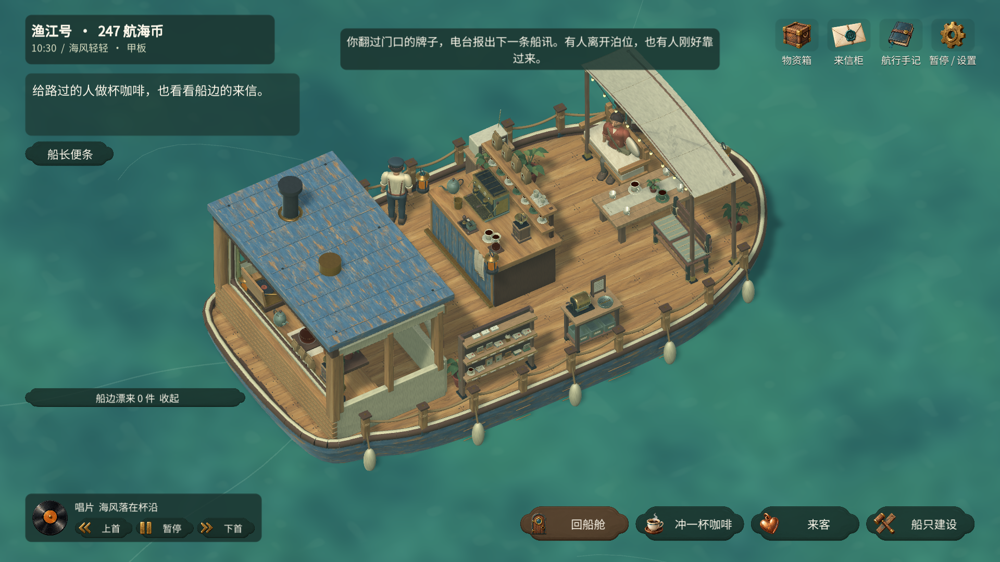
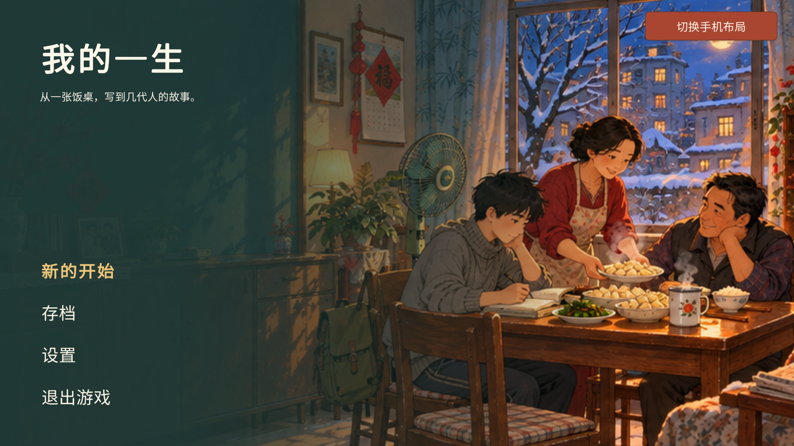
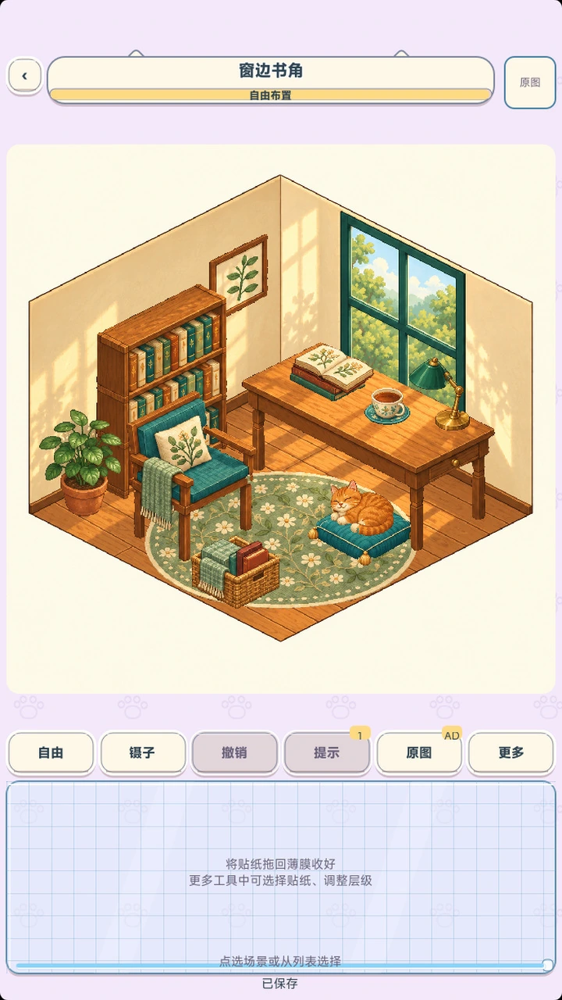
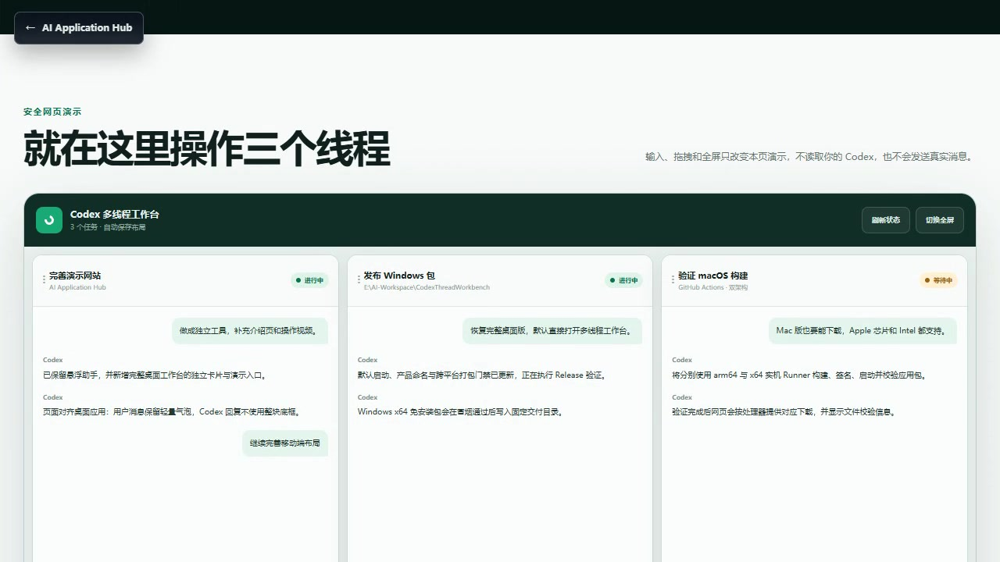

唯一策划 · 休闲小游戏
成语小秀才
主导成语填字、科举题材包装与养成线。
中国式相亲 · 名利游戏
以主策划 / 执行制作人角色连接系统设计与项目推进：负责《中国式相亲》系统框架到落地、剧情大纲与验收；在《名利游戏》负责全部系统界面功能和线路图绘制摆放，参与分支线路与数值奖励设计配置，不含剧本创作。
查看我的角色 ↗我的小镇 · 作妖计
主策划负责《我的小镇》的任务、宝箱、图鉴、新手与数值设计，并参与《作妖计》小游戏的魔罩、魔宠系统；以框架、配置、交互和版本化文档连接设计与研发交付。
查看我的角色 ↗Wordvillas · Words with Colors
在约百人规模项目中协作程序、美术与剧情组，推进 Wordvillas 分支剧情、锦标赛、活动及投骰子玩法上线，承接排期、任务拆分、组内验收与项目文档等部分 PM 工作。
查看我的角色 ↗成语小秀才 · 谁是火车王 · 百变汪星人
作为《成语小秀才》项目唯一策划，主导玩法、科举题材包装与养成线；同时保留《谁是火车王》《百变汪星人》的主策划项目经历。
查看我的角色 ↗纸片少女 · 造物梦工厂
结合 QA 管理与游戏策划，承担测试管理、关卡调优、资源整理及主支线任务文案，形成从质量检查到内容设计的工作基础。
查看我的角色 ↗计算机科学与技术 · 本科 · 2015.09—2017.07
从关卡、任务到系统规则，用职业项目串联设计经验。
项目排期、任务拆分、组内验收与文档交付，连接策划、程序、美术和剧情。
PC 端操作、UI/UE 与新手流程，沿着问题调整体验。
职业测试管理经历，以及个人工具中的验收与一致性检查。
用于文档撰写与检验、表格与数值工具、项目管理，以及个人工具和小游戏开发；独立游戏中也探索 UI、角色、配音与音乐音效制作。
把想法、关卡和任务变成可编辑、可交接的结构。
CAPABILITY / 方法与协作
我负责产品判断、任务组织与验收，
让 AI 产出进入团队的实际研发流程。
从需求收口、原型验证到任务跟进与测试复盘，连接策划、程序与美术的协作。
查看协作方法与职责 ↗独立游戏、AI 游戏与 AI 应用。
INDEPENDENT GAMES / 两人合作
在参与《中国式相亲》期间，我利用闲暇时间与一位程序员合作，以两人团队开发了以下独立游戏。
我的分工
负责全部策划内容，包括关卡设计、数值设计、策划文档，以及 UI/UE 界面设计。
版本迭代：针对重复操作，设计自动售卖、战斗后资源结算和“完成战斗后进入下一天摆摊”的规则；5月版本文档标注已完成。弱点血条、章节难度调整和车身分化为文档标注进行中，不能混写成已交付成果。
经营设计依据《摆摊经营规划》的食物、食物配方、食物特性、NPC、食材和摊位六张表。表内价格标为“旧版定价”；配置结构不证明最终成交算法或上线状态，本页不公开完整价格、配方数量与成功率配置。
本轮案例依据本人提供的《关卡战斗规划》《舌尖上的魔术师》5月版本修改、项目甘特图及关卡设计。关卡设计的修订表记录 2024 年 5 月 21 日由吴天昊创建；个人分工由本人确认。完成状态仅引用文档记录，不等同于最终上线核验；不将留存、效率等预期写成实测成果。菜品售价等条目的标题与正文状态有冲突，暂不认定完成。
此前在线版本排期包含 17 项策划任务，最后修改于 2024 年 9 月，前三项标为“进行中”，其余标为“待启动”。它与本轮甘特图是不同资料快照，不互相覆盖；排期不作为全部完成或上线的证明。完整配置、成员信息及文档内的外部参考图不公开。

驾驶魔法战车探索奇幻世界，收集资源、对抗怪物；通过延长车身、升级魔塔构建移动防线，再用珍稀食材烹饪增能美食、摆摊交易，将塔防、建设与经营连接起来。
玩法简介依据官方 Steam 页面。

我的分工
负责全部策划内容，包括关卡设计、数值设计、策划文档，以及 UI/UE 界面设计。
参考本人提供的《除灵事务所》开发时间轴与开发历程完整回顾，两份均为 AI 后期整理资料。个人职责依据本人确认；开发过程与设计内容依据回顾记录，不作为所有方案全部上线或经营效果的证明。程序实现由合作者负责，回顾中其他人员署名的任务不归为本人独立成果。

灵异题材的卡牌构筑与轨道连消，结合恶灵养成、随机事件与策略取舍。
玩法简介依据官方 Steam 页面。
Unity H5 小游戏
机场安检审核题材的竖屏闯关小游戏，切换普通、X 光和轮廓视图，判断行李能否放行。
Unity 微信小游戏原型
以成语填字和诗意来信为核心的竖屏小游戏，使用 Unity UGUI 搭建界面，支持调试面板、关卡快照和过关结算。
2D 推箱子解谜小游戏
只有两关的竖屏推箱子原型：第一关一推即过，第二关开场扫出大地图，再缩回当前区域，让玩家在低理解成本里一路觉得快过了。
Unity WebGL 小游戏
围绕新疆馕设计的竖屏休闲解谜体验：把不同馕放入烤位，利用火候、温区与订单顺序完成十个普通模式关卡。
Unity 直播互动游戏
俯视航行、船上视角救人。一起选路、修船和照明，在三段风暴中带三个人回家。
AI GAME DEVELOPMENT / 个人作品
Ring Haven · 休闲解谜
我用 AI 做出了一款圆环解谜游戏。
从旋转解扣的操作反馈，到 30 个炸弹关、30 个奖励关，我把玩法想法逐步做成了有闯关节奏的游戏。每日挑战的胜利奖励还能带回主页，为海狸换装。
查看游戏与 AI 创作过程 ↗
模拟经营 · Windows 可玩原型

竖屏模拟经营 · TapTap 制造
在南街开一家修复小店。跟着街坊的委托清理、装配和调试旧物，靠修复收入经营店铺，也慢慢拼起街坊们的故事。
我用 AI 辅助完成手机版适配，把修复动作、经营收支和故事解锁做进同一条流程。

个人游戏作品 · Unity
Windows 可玩开发版
开一间在海上漂流的咖啡馆。
玩家在甲板打捞物资和漂流瓶，回船舱冲泡咖啡，再用营业收入与材料改造渔船。
我定下甲板和船舱的玩法分工，设计打捞、冲泡、来客和改船的经营循环，并用 AI 辅助把这些交互做进 Unity。
查看玩法设计与实机画面
TAPTAP MAKER / 个人 AI 游戏实践
从玩法策划、关卡与数值设计，到界面、美术整合和版本迭代。每款作品附展示图与玩法说明。已开放的作品提供 TapTap 入口。
塔罗卡牌策略 / 分支叙事

在十五天的旅程里，白天用牌来工作、休整和建设街区，夜晚用留在手中的塔罗逆位应对梦魇。同一张牌，今天用掉还是留到今晚，是每个白昼都要做的决定。
TapTap 横屏公开测试
竖屏休闲 / 拼图益智
点选两片交换位置，也能拖动已拼合的小组。每拼好一幅画，碎片就退场并补入新片，玩家在 70 个关卡中逐步收集 40 幅作品。
TapTap 制造 · 已上线
家庭照护 / 角色调度 / 生活模拟

把带娃日常做成一套照护任务链。玩家在爸妈和祖辈之间切换，安排喂养、洗护与休息，在宝宝需求、家人体力和突发事件间取舍。
TapTap 2D 试玩 · Windows 3D 开发实录
卡牌构筑 / 城池布阵 / 自动战斗

三张手牌，一年一战。选择阐教或截教英雄，用有限的资源和地块建城、增援或施法，在十二年征伐中逐步成形自己的军团。
Windows 原型 · TapTap 手机版 0.36 已发布
人生模拟 / 月度经营 / 家庭关系

从十八岁开始，选择读书或工作，经营家庭的月度收支与住房。随着家人出生、长大和离世，玩家能在家谱与履历里回看每代人的选择。
TapTap 公开测试 · Windows 本地试玩
滑动解谜 / 夜市收纳

在暖灯夜市里滑动桃桃、抹茶和团团，借箱子与伙伴挡住去路，把大家送回同色摊位。先预览落点，再安排移动顺序。
TapTap 公开测试 · 2026.10.25 核对
配对消除 / 概率锻造 / 收集养成

配对消除铜钱、银子和金砖，再把收入带回百器工坊。购入剑、斧或锤，沿独立进阶路线锻造、变异并安排收藏展示。
TapTap 公开测试 · 2026.10.25 核对
合成料理 / 轻经营 / 旅行收集

我用 AI 协作把合成棋盘做成能摆菜的餐桌。玩家看顾客头顶的订单配餐，用收入升级餐车，沿六个美食站点继续旅行。
竖屏开发实录 · AI 美术与交互
叠球配餐 / 订单匹配 / 关卡挑战

看清顾客要的口味层次，点选四色冰球，叠好甜筒后通过传送带交餐。300 关串起不同主题场景，每日挑战与小店装扮提供后续目标。
TapTap 公开测试 · 2026.10.25 核对
文字冒险 RPG / 灯火探索 / 局外成长

提灯进入 30 层天坑，在有限灯火中判断战斗、用药和绕行。带回永久成长，再用技能、装备和炼药调整下一次出发。
TapTap 公开测试 · 2026.10.25 核对
低重力驾驶 / 运输任务 / 叙事探索

驾驶六轮月球货车连接六座据点，在低重力路面保护不同货物。导航、太阳能和巡路援助服务运输，联络员与地球家书让旅途带上故事。
TapTap 公开测试 · 2026.10.25 核对
旧物修理 / 轻经营 / 叙事益智

在街角小铺检测台灯、音乐盒和风扇，清理、校正、组装再测试。短益智连接修理动作，街坊故事和店铺成长赋予旧物新的去处。
TapTap 公开测试 · 2026.10.25 核对
像素贴纸 / 场景布置 / 轻松收纳

用小镊子从透明薄膜上揭起贴纸，把家具和小物贴成温暖房间。五大主题、45 个场景与 600 件贴纸，完成目标后继续自由布置。
TapTap 公开测试 · 2026.10.25 核对
轻策略 / 自走棋 / 卡牌构筑

在金币和格位有限的屋顶上买牌、合成、布阵，交锋时亲手选择法术落点。最多十回合，率先拿下六胜。
Godot 桌面原型 · TapTap Maker 竖屏测试阶段
竖屏休闲益智 / 记忆配对 / 肉鸽寻宝

记住牌面、配对消除，把选到的宝物一件件叠到小狗头上。每轮达标后，决定补给再闯，还是带宝回家培养小狗。
TapTap Maker · 手机测试版本

需求与交付
整理群聊和策划文档，拆成六职能任务、验收标准与改动影响。
完整示例可离线体验，模型连接可选。


多任务协作
并排查看任务和对话，直接输入消息、查看状态并调整卡片位置。
网页演示使用示例任务。
AI PRACTICE / 工具运用与场景实践
Windows 桌面工具
围绕实际任务，
选择并组合 AI 工具。
将 AI 工具运用到资料整理、内容构思与视频制作：先明确目标，再选择工具、准备输入、检查产物，并把操作方法整理成新手可复用的步骤。
我负责应用场景、工具使用路径与效果判断；通过 Codex 辅助实现和验证，将零散工具整理为面向实际问题的工作流。
查看 AI 工具应用与真实成果 ↗
小游戏产品洞察
把国内与海外榜单、行业知识库、玩法拆解、发布合作和开放接口放在同一张开发者工作台上。
AI 开发桌面工具
醒目的额度数字与进度条贴在桌宠上方；Codex 桌宠优先，没有时自动使用内置西装仓鼠。
AI 开发桌面工具
自动扫描真正需要你回复的 Codex 任务；空闲时左侧收纳，左侧悬停展开竖版面板，可查看原任务，并按需开启自动确认。
网页素材整理
输入网页 URL，在始终置顶的桌面窗口里扫描、筛选、预览并批量下载公开网页素材。
游戏立项与需求工具
用快速选项和可展开问卷整理小游戏立项需求，生成可直接交给 Codex 的项目需求与 Unity 微信小游戏通用开发记忆。
游戏需求与 AI 开发
通过灵感组合和开发配置，一次生成可直接交给 Codex 等 AI 工具执行的游戏开发任务书。
策划训练答卷
60道通用游戏策划基础题，覆盖玩法、系统、关卡、数值、经济与数据等10类知识；每天抽取10题，提交后查看答案、解析和练习建议。
AI 内容生成
输入旅行心情和目的地，生成拍照任务、九宫格结构、预算建议和可直接发布的朋友圈文案。
浏览器插件
面向飞书文档和文件资源整理场景，提供更清晰的批量下载和插件说明入口。
效率工具
导入 Codex 对话记录，按维度评分并给出问题与改进建议，可导出 Excel 复盘表。
Codex 效率工具
把常用模型、中文界面、全局快捷键、任务命名和对话报告集中到一个本地设置工具里。
AI 表达转换
把一段话转换成情绪表达、生活说明、情书暗语、多语言或古诗古文版本。
美术设计参考
作为砖块叠层显露的美术参考，用于比较材质、百叶窗、棋盘格、遮罩与形变回退，帮助团队挑选克制且明显不同的呈现。
媒体压缩工具
在设备本地批量压缩图片、视频、GIF、音频和一般文件，严格无损默认开启，原件永不覆盖。
AI 互动实验
从 30 个受控实验中本地匹配模型，拖动参数，并在 5 种图表视图间切换，观察指标、曲线与结论如何变化。
AI 情报工具
贴吧式整理 X 上 Tibo、马斯克、Codex 与 OpenAI 官方发言，每天北京时间 08:00 检查 Token／额度重置预告；首屏可展开中英文对照的完整原帖、中文翻译、编辑整理与精选评论。
AI 音乐工作流
在浏览器本地分析参考音乐，编排循环背景音乐提示词批次，并比较候选与维护授权台账。
游戏策划学习
从玩家动机到随机奖励与虚拟交易，沿50课路线学习；当前19课可阅读全文。
04 / PERSONAL AGENT PRACTICE
以游戏需求开工台为例。
这里展示已有能力的阅读流程。
INPUT / 保留依据
粘贴文本或导入材料，提取决定、疑问和范围。任务可以回到来源证据，避免上下文在整理中丢失。
确认材料范围与关键原文，区分已经决定的内容和仍需确认的问题。
STRUCTURE / 可执行任务
围绕策划、客户端、特效、音频、动画与测试，组织产物、依赖和验收项，把讨论变成能继续推进的工作。
确认分工和实现范围；任务中的负责角色不代表真实团队成员或本人的履历。
REVIEW / 一致性检查
检查任务是否有验收依据、依赖是否完整、疑问是否解决。生成结果需要校对，不能直接视为已确认事实。
核对疑问与验收口径，再决定是否标记为可交付；自动检查不能替代实际验收。
HANDOFF / 可检查产物
导出 Markdown、JSON、CSV 或 Codex 上下文包；比较前后版本，查看需求改变影响哪些任务和验收项。
确认导出内容与当前版本一致，再交给团队或实现 Agent；公开示例不等于生产效率数据。